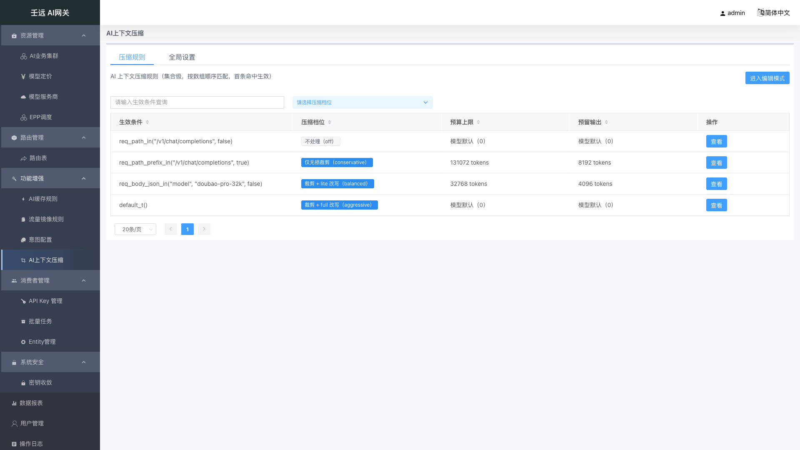
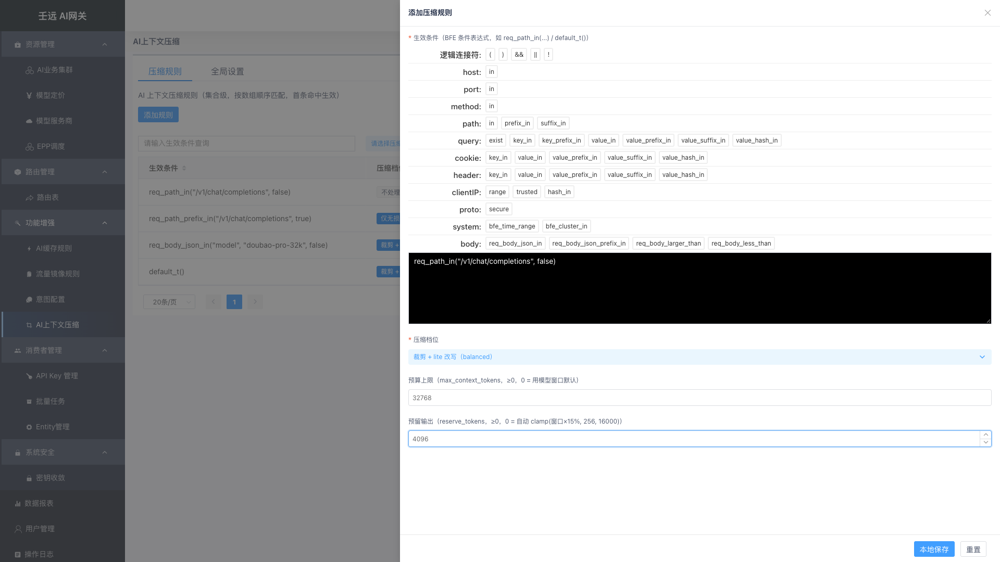
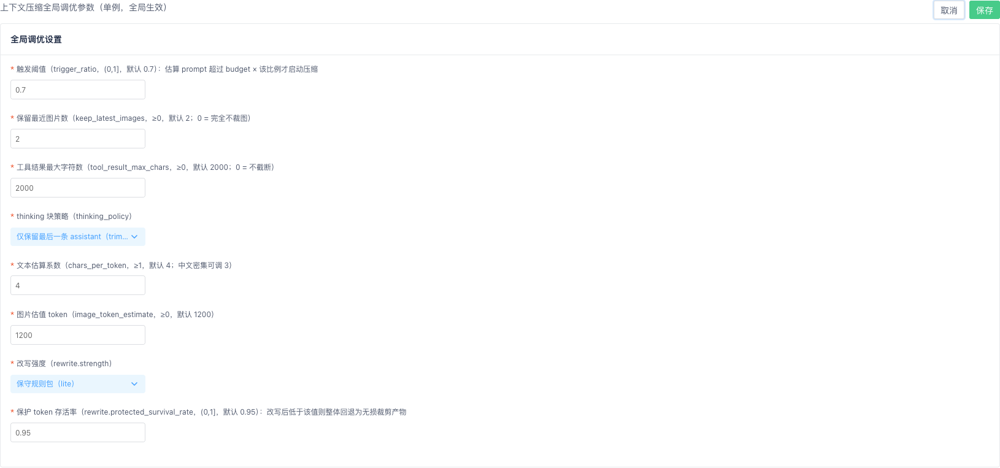

18 功能增强：AI上下文压缩
菜单路径：功能增强 → AI上下文压缩（页面路由 ai-context-rules，路由名 AIContextRule.list；在导航中为「功能增强」分组下的第 4 项，与 AI缓存规则、流量镜像规则、意图配置并列）。
页面为单页双页签结构，顶部有「压缩规则」与「全局设置」两个 Tab，两者对应两个互相独立的接口：
| Tab | 内容 | 接口 | 写语义 |
|---|---|---|---|
| 压缩规则 | 上下文压缩规则集合（列表 + 新增/编辑/查看抽屉） | GET / PUT /ai-context-rules | 整组替换：提交的数组即生效集合，数组顺序即优先级 |
| 全局设置 | 裁剪层与改写层的全局调优参数（单例表单，8 个字段） | GET / PUT /ai-context-settings | 单例整行覆盖：一行配置，全量保存 |
这个模块解决什么问题：长对话、长工具结果、多模态图片会让请求的 prompt 越来越大，既贵又容易超出模型上下文窗口。AI上下文压缩让你按请求（用条件表达式区分）选择压缩档位——从「只做无损裁剪（截断超长工具结果、丢弃旧图片、删除历史 thinking 块）」到「在此基础上再做规则改写」，并为全模块设定统一的估算系数、触发阈值与改写强度。配置保存后由 BFE 数据面的 mod_ai_context 模块执行，自动把超预算的请求压到预算以内再转发给模型。
前置说明：本模块的生效条件使用 BFE 条件表达式，与 10 章 路由管理 的表达式构造器同源；压缩只作用于 OpenAI chat 协议请求（一期）。
18.1 压缩规则列表
进入 功能增强 → AI上下文压缩，默认停在「压缩规则」Tab。页签下方副标题为「AI 上下文压缩规则（集合级，按数组顺序匹配，首条命中生效）」。

表格列说明：
| 列名 | 说明 |
|---|---|
| 生效条件 | BFE 条件表达式，命中即对该请求按所选压缩档位处理；文本搜索列；等宽字体展示，空值显示 - |
| 压缩档位 | 以标签展示：不处理（off） / 仅无损裁剪（conservative） / 裁剪 + lite 改写（balanced） / 裁剪 + full 改写（aggressive）；off 为默认色标签，其余为蓝色标签；下拉筛选（选项为裸枚举 off / conservative / balanced / aggressive） |
| 预算上限 | max_context_tokens。0 或未配置显示「模型默认（0）」，否则显示 64000 tokens |
| 预留输出 | reserve_tokens。0 或未配置显示「模型默认（0）」，否则显示 8192 tokens |
| 操作 | 视图模式：「查看」；编辑模式：「编辑」「删除」 |
- 四个数据列均支持点击表头排序（升序 → 降序 → 取消）；「生效条件」「压缩档位」支持筛选，筛选与排序均在前端对已拉取的集合进行（集合级接口无分页参数）。
- 表格自带分页器（每页
20条，可选20 / 30 / 40 / 50），数据量大时前端分页展示。 - 列表不展示名称、启用开关、优先级列，也没有「添加规则」之外的批量操作：规则没有
name、enabled、priority字段，生效条件本身即规则身份；「想禁用一条规则」= 把它从列表移除，或把它改成一条不处理（off）的兜底规则。 - 行的展示顺序就是接口返回的数组顺序，也就是匹配优先级顺序（首条命中生效），列表不做任何重排。
视图模式 / 编辑模式
页面采用与路由规则一致的双模式：
| 模式 | 页头按钮 | 行操作 |
|---|---|---|
| 视图模式（默认） | 「进入编辑模式」 | 「查看」 |
| 编辑模式 | 「添加规则」「退出编辑模式」「提交并生效」 | 「编辑」「删除」 |
- 点「进入编辑模式」后，系统先对当前集合做一份快照，所有增删改都只作用于本地草稿，不产生写请求。
- 点「退出编辑模式」时，若本地有未提交改动，会弹出二次确认「当前有未提交的改动，退出编辑模式将丢弃这些改动，确认退出？」；点「确定」回滚到快照并重新拉取集合（提示「已退出编辑模式」），点「取消」留在编辑模式且保留改动（提示「已取消退出」）。没有改动时直接退出，不弹确认框。
只读视角（「系统管理员（只读）」，
role = system_admin_readonly，见 1.2.6 只读视角）：页头不显示「进入编辑模式」「添加规则」「退出编辑模式」「提交并生效」，页面恒停留视图模式；行操作列只保留「查看」，「编辑」「删除」隐藏；「全局设置」Tab 的「编辑」「取消」「保存」一并隐藏，只保留 8 项参数的只读文案。只读账号在本菜单仍可见（导航allowed_roles含admin_readonly），后端对两个写端点做 403 兜底。
18.2 新增 / 编辑压缩规则
在编辑模式下点「添加规则」/ 行内「编辑」，右侧弹出宽度 60% 的抽屉，标题分别为「添加压缩规则」「编辑压缩规则」。

| 字段 | 必填 | 默认值 | 校验规则 | 说明 |
|---|---|---|---|---|
| 生效条件 | 是 | 空 | 非空；须通过控制面表达式编译校验（非法表达式整体 422）；同一集合内唯一 | 由条件表达式构造器填写，如 req_path_in("/v1/chat/completions", false)、default_t()。命中即按所选档位处理该请求；它同时是规则的唯一身份 |
| 压缩档位 | 是 | off（不处理（off）） | 四枚举之一：off / conservative / balanced / aggressive | off 不处理；conservative 仅无损裁剪（工具结果截断 / 旧图裁剪 / thinking 删除）；balanced 裁剪层 + lite 规则改写；aggressive 裁剪层 + full 规则改写 |
| 预算上限 | 否 | 空（等价 0，提交时省略该字段） | 整数且 ≥ 0 | max_context_tokens：把「可用预算的输入部分」显式钉死，替代模型窗口参与算式。0 / 不填 = 使用模型窗口默认（数据面按模型名启发式，128k 兜底） |
| 预留输出 | 否 | 空（等价 0，提交时省略该字段） | 整数且 ≥ 0 | reserve_tokens：压缩目标 = min(窗口, 预算上限) − 预留输出，给应答留生长空间。0 / 不填 = 自动 clamp(窗口×15%, 256, 16000) |
交互要点：
- 底部按钮为「本地保存」（主色）与「重置」。「重置」把表单恢复到打开抽屉时的状态（新增时为空白）。
- 「本地保存」只把这条规则写进本地草稿集合并关闭抽屉，提示「添加成功！」或「保存成功！」；不会发请求，必须再点页头「提交并生效」才落库生效。
- 新增的规则插入到集合头部（置顶），因此刚加的最高优先级规则会最先匹配；要调整顺序目前只能通过删除后在正确位置重建（列表不支持拖动排序）。
- 抽屉遮罩不可点击关闭（避免误丢草稿），需用右上角关闭按钮或「重置」后关闭。
- 生效条件在保存时会做集合内查重（编辑时排除自身），重复则拦截并提示「生效条件已存在，集合内必须唯一」。
18.3 查看压缩规则
在视图模式（或只读视角）下点行内「查看」，右侧弹出只读抽屉，标题「查看压缩规则」，宽度 60%，点击遮罩可关闭。
抽屉以纯文案形式展示 4 项内容，没有任何输入控件，也没有必填星号：
| 展示项 | 展示规则 |
|---|---|
| 生效条件 | 等宽字体展示原表达式；为空显示 - |
| 压缩档位 | 本地化文案，如 裁剪 + lite 改写（balanced） |
| 预算上限 | 0 / 缺失显示「模型默认（0）」，否则显示 xxx tokens |
| 预留输出 | 同上 |
查看抽屉不产生任何写请求，也不校验字段；关闭后再查看另一条规则会完整替换内容，不会残留上一条的数据。
18.4 删除与清空规则
在编辑模式下点行内「删除」，弹出确认框（标题「信息提示」）：
确认删除该压缩规则？删除后需提交并生效。
- 点「确定」：该行从本地草稿集合中移除，提示「删除成功!」；点「取消」，集合不变，提示「取消删除」。
- 删除只作用于本地草稿，不发请求；必须点「提交并生效」才真正落库。若删除后直接「退出编辑模式」并确认丢弃改动，删除会被回滚。
- 清空全部规则：在编辑模式下把所有规则逐条删除，再点「提交并生效」，提交体为
{"rules": []}，即清空整个集合。清空后数据面无规则命中，所有请求天然放行（不做任何压缩）。 - 删除不会影响「全局设置」Tab 的内容——两个接口互相独立，清空规则并不重置全局参数。
18.5 提交并生效
编辑模式下页头右上角的「提交并生效」是规则 Tab 的唯一写入口。点击后：
- 先做提交前检查：剔除空生效条件后对全集合的生效条件做去重校验，命中重复直接拦截并提示「生效条件已存在，集合内必须唯一」，不发送请求。
- 通过校验后向
PUT /ai-context-rules发送{ "rules": [ ... ] }，数组顺序即优先级；请求体中的规则不含创建时间 / 更新时间（接口也不返回这两个字段）。 - 提交成功提示「提交并生效成功！」，页面自动回到视图模式并重新
GET /ai-context-rules回填列表。 - 提交失败提示「提交失败!」，并停留在编辑模式，本地改动不丢失，便于修正后重试。后端对任一元素校验失败会整体 422 且集合不变（生效条件不可编译、压缩档位非法、数值为负等）。
整组替换语义（最容易被忽略的一点）：这个接口是「提交什么就是什么」，没有单条更新接口。不在你提交列表里的规则即被删除。因此多人同时编辑时，后提交者的集合会完整覆盖前者；建议改动前后都先看一遍列表，不要基于过期页面提交。
18.6 全局设置
切到「全局设置」Tab，副标题为「上下文压缩全局调优参数（单例，全局生效）」，下方 Cards 标题「全局调优设置」。视图态以 8 行纯文案展示；点页头「编辑」后变为可编辑表单（8 个控件，全部必填，label 前有红色 *），此时页头按钮变为「取消」「保存」。

| 字段 | 必填 | 默认值 | 校验规则 | 说明 |
|---|---|---|---|---|
| 触发阈值 | 是 | 0.7 | 数值 (0, 1]（大于 0 且不超过 1） | trigger_ratio：估算 prompt token 超过 预算 × 该比例 才启动压缩，处理目标是压到 ≤ 预算 |
| 保留最近图片数 | 是 | 2 | 整数 ≥ 0 | keep_latest_images：多模态消息中的内联图片只保留最近 N 张，更旧的替换为占位文本；0 = 完全不裁图（视图态显示「（完全不裁图）」） |
| 工具结果最大字符数 | 是 | 2000 | 整数 ≥ 0 | tool_result_max_chars：单条 tool/function 结果超限截断为「前段 + ...[truncated]」；0 = 不截断（视图态显示「（不截断）」） |
| thinking 块策略 | 是 | trim-all-but-last | 二枚举：trim-all-but-last / keep | thinking_policy：仅保留最后一条 assistant（trim-all-but-last） 删除除最后一条 assistant 外的所有 thinking 块；保留全部（keep） 不动 |
| 文本估算系数 | 是 | 4 | 整数 ≥ 1 | chars_per_token：字符/token 估算系数（与 BFE 既有惯例一致），中文密集场景可调小到 3 |
| 图片估值 token | 是 | 1200 | 整数 ≥ 0 | image_token_estimate：单张内联 base64 图片的固定估值 token |
| 改写强度 | 是 | lite | 二枚举：lite / full | rewrite.strength：保守规则包（lite） / 激进规则包（full），仅 balanced、aggressive 档位的规则改写层会用到 |
| 保护 token 存活率 | 是 | 0.95 | 数值 (0, 1] | rewrite.protected_survival_rate：fidelity gate 阈值，改写后存活率低于该值则整体回退为无损裁剪产物（保安全） |
交互要点：
- 点「取消」直接回滚到进入编辑态时的快照，没有二次确认，且不发请求；未保存的改动被丢弃。
- 点「保存」会先做 8 项字段校验，失败时在对应控件下方内联报错并弹出「请检查参数填写是否规范!」，停留在编辑态；成功提示「全局设置保存成功！」，回到视图态并重新拉取设置回填。
- 保存请求体是完整的 8 字段结构化对象（后两项嵌套在
rewrite下）；服务端执行单事务覆盖写。 - 「保存」按钮在请求期间显示 loading，防重复提交。
- 设置是全系统单例（一行配置）。若从未配置过，
GET /ai-context-settings仍返回上表默认值对象（HTTP 200），页面因此总是显示默认值而不是空白。 - 与规则集合生命周期解耦：设置独立保存，清空规则不影响设置，设置也随导出的
Defaults块恒定下发。
18.7 校验规则与错误提示
规则表单校验（抽屉内，「本地保存」时触发）：
| 触发条件 | 提示文案 |
|---|---|
| 生效条件为空 | 请填写生效条件 |
| 生效条件表达式不可编译 | 由表达式校验接口返回的具体错误信息（优先于非空校验展示） |
| 生效条件与集合内其他规则重复 | 生效条件已存在，集合内必须唯一（保存时与提交前各拦截一次） |
| 压缩档位非法 | 压缩档位不合法 |
预算上限 < 0 | 预算上限不能小于 0 |
预留输出 < 0 | 预留输出不能小于 0 |
| 任一字段校验失败 | 内联展示 + 整体提示 请检查参数填写是否规范! |
全局设置校验（点「保存」时触发）：
| 触发条件 | 提示文案 |
|---|---|
触发阈值 ≤ 0 或 > 1 | 触发阈值须大于 0 且不超过 1 |
保留最近图片数 < 0 | 保留最近图片数不能小于 0 |
工具结果最大字符数 < 0 | 工具结果最大字符数不能小于 0 |
| thinking 块策略非法 | thinking 块策略不合法 |
文本估算系数 < 1 | 文本估算系数不能小于 1 |
图片估值 token < 0 | 图片估值 token 不能小于 0 |
| 改写强度非法 | 改写强度不合法 |
保护 token 存活率 ≤ 0 或 > 1 | 保护 token 存活率须大于 0 且不超过 1 |
加载与提交失败：列表加载失败提示「加载 AI 上下文压缩规则失败」，设置加载失败提示「加载 AI 上下文压缩设置失败」；提交失败提示「提交失败!」并保留当前编辑内容。
18.8 注意事项
0不等于「不限制」，而是「交给模型窗口默认」：预算上限与预留输出填0时，提交体会省略该字段，界面统一显示「模型默认（0）」，含义是「用模型窗口而不是某个固定 token 数」。需要精确预算（例如窗口未下发准确值）才填具体数字。- 数组顺序即优先级，且整组覆盖：没有优先级字段，
PUT提交什么就是什么，未提交的规则会被删除；新增规则默认置顶，想插到中间只能重建顺序。多人协作时注意覆盖风险。 - 生效条件即规则身份：没有名称与启用开关，条件重复会被前端查重拦截；「停用一条规则」的正规做法是移除它，或保留一条
default_t()+不处理（off）的兜底规则。 - 两个接口互不影响：保存规则不会连带提交设置，反之亦然；清空规则集合也不会重置全局设置。改完规则记得单独确认设置是否符合预期。
- 设置页「取消」无二次确认：与规则 Tab 的「退出编辑模式」不同，设置 Tab 点「取消」会立即丢弃未保存的改动，改动较多时请先确认。
- 生效有延迟，且是「提交」而非「保存」：抽屉里的「本地保存」只改本地草稿；必须点页头「提交并生效」才写回控制面，之后还要经过 conf-agent 轮询周期 + BFE 热加载才真正生效。看到列表没变，先检查自己是不是漏点了「提交并生效」。
- 一期不支持的字段：规则级
override、Defaults 内summary、精确模型上下文窗口等二期能力暂不开放，界面不提供入口；数据面收到未知字段会忽略并计数告警，升级是平滑的。